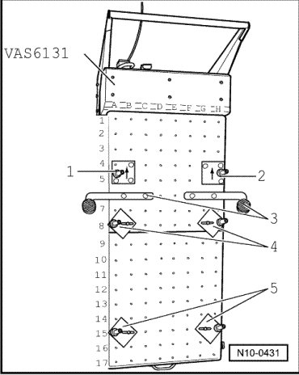
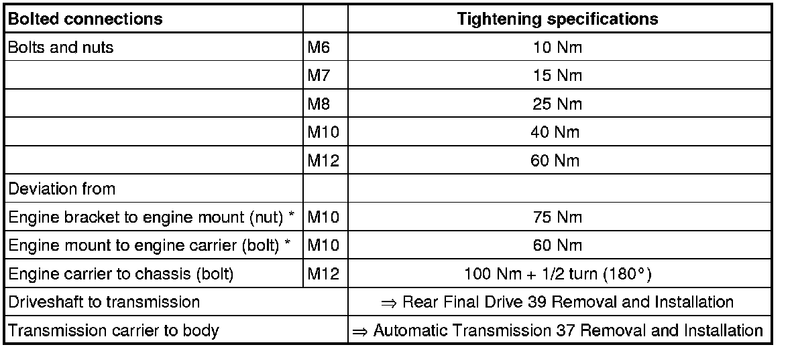

Engine Installing
Engine Installing
CAUTION!
When doing any repair work, especially in the engine compartment, pay attention to the following due to clearance issues:
• Route all the various lines (e.g. for fuel, hydraulics, EVAP system, coolant, refrigerant, brake fluid and vacuum lines and hoses) and electrical wiring so that the original positions are restored.
• Ensure sufficient clearance to all moving or hot components.
• When installing powertrain to body, it is always necessary to bring engine carrier into contact on body using the scissor lift table (VAS 6131). Pulling up engine carrier with mounting bolts damages thread inserts!
Procedure
Installation is performed in reverse order. When doing this note the following:
- Check whether dowel sleeves for centralizing engine/transmission are in cylinder block, install if necessary.
If the subframe with suspension assembly has been removed from the assembly platform :
- Position the axle assembly with subframe again on the prepared scissor lift table.

- Set engine on assembly carrier.
If transmission is not yet bolted on:
- Support engine with support (VAS 6131/7).
- Before installing the assembly, install the exhaust manifolds with catalytic converters onto the engine --> [ Exhaust Manifold with Catalytic Converters and Attachments, Assembly Overview ] Exhaust Manifold with Catalytic Converters and Attachments, Assembly Overview.
- When installing the engine, use scissor lift table to lift so far that the selector cable can be attached.
- Reconnect all lines, hoses and connections that were disconnected for the removal sequence.
- Connect air conditioning lines.
- Fill up oil for power steering.
- Top off engine oil.
- Electrical connections and routing:
- Fill with coolant --> [ Cooling System, Draining and Filling ] Procedures.
- Top-off ATF level.
• After installing the assembly, perform a vehicle alignment. Alignment
- Perform vehicle system test "Guided Fault Finding".
- End vehicle system test, this will automatically erase DTC entries which occurred during the assembly.
- Perform road test.
- Generate readiness code in conjunction with a road test.
• Observe safety precautions that apply to road tests --> [ Safety Precautions ] Safety Precautions.
- Then perform vehicle system test again and repair any occurring malfunctions if necessary.
Tightening Specifications

* Engine bracket and engine mount, removing and installing --> [ Engine Bracket and Mount ] Service and Repair.